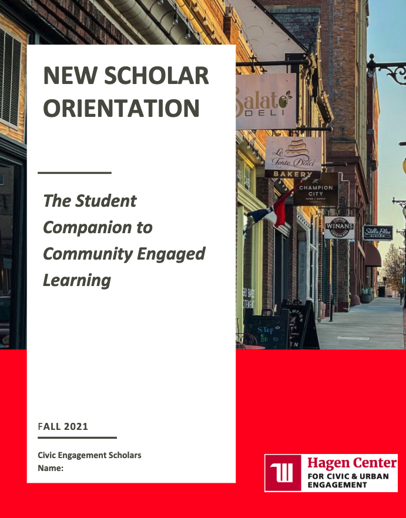
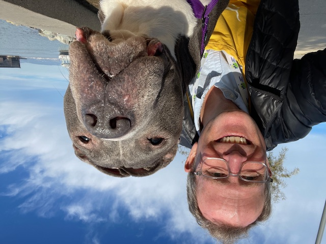
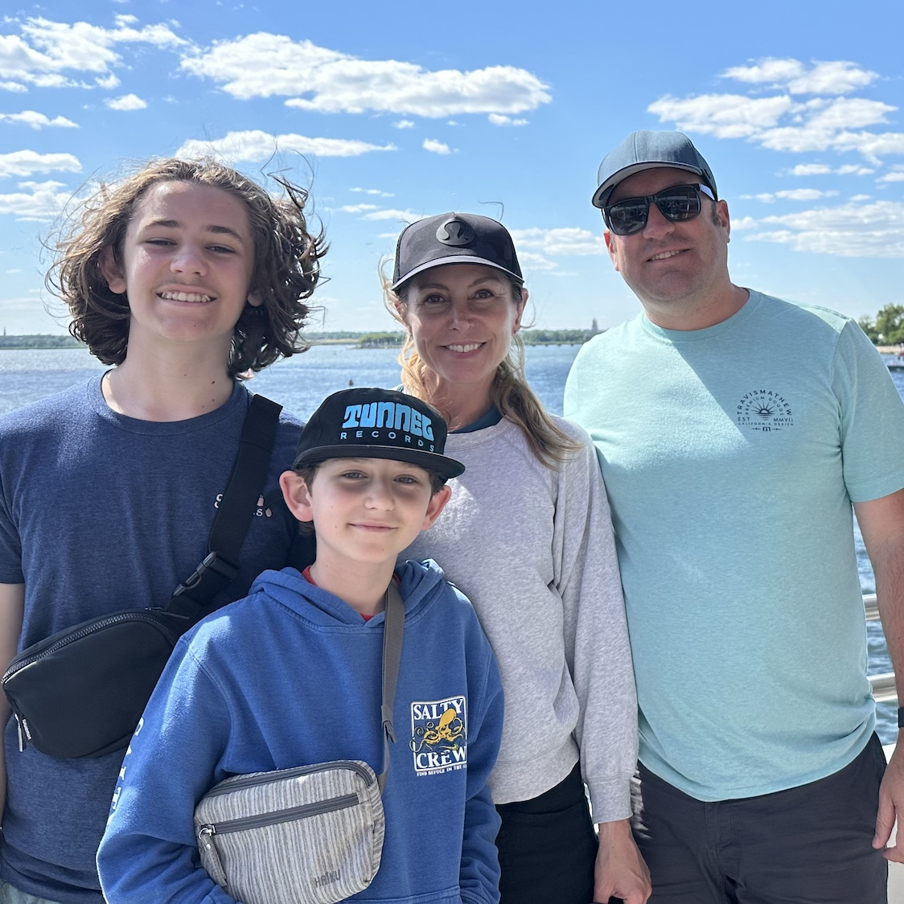

Faculty Resources for The Student Companion to Community-Engaged Learning
Faculty Insights
Associate Professor of Biology, University of San Francisco
On holding back on answers and pushing student creativity
Dilemmas are not problems. They can really be productive sites for learning and teaching and reflection. Instead of thinking, what do I have to do? We could say, what should I do, or even how can I leverage my knowledge and tap into others’ knowledge to take on this challenge. And when we feel discomfort, we can ask, what would the world look like if it were as just and kind and egalitarian as we can imagine, and then we can tap into our creativity and figure out how to take the next steps to get there.
Associate Professor of Environmental Studies, University of San Francisco
On partnering with the communities you already work with
Reach out into those communities that they're already a part of. So many of us have so many different communities, and we often categorize: well, that's my work community, that's my play community, that's my personal community. I don't see why we don't just combine them all. I had a great colleague who was just obsessed with everything about bicycles, and when he started doing community engaged learning, he got really interested in local bicyclists, and he kind of uncovered an entire terrain of people doing activism on biking and all kinds of bike-related urban studies activism. At first, he felt a little sheepish because he was just talking to his friend Ned. You know that's what it was. But Ned actually uncovered all these different opportunities and places where students were needed to both learn and to listen and to contribute their knowledge.
Professor of Computer Science, University of San Francisco
On the importance of community partners
For any faculty member considering a community engaged learning course, I think the first step would be to think very deeply about how you want to facilitate community engagement for your students. The reason why you want to do that is because if you think about those learning goals that you have for your students, then you can use those to identify community partners that can help you align your course with those goals.
For example, one of the things that I wanted to do was help my students think about the inequities in tech: either middle school students who may not have the same opportunities that they might have had, or older adults because technology is being designed for people between 20 and 40 years old and who don't have any disabilities and all the challenges of old age. In my case, my community partners helped me with getting our students to realize that there are inequities in tech the way it taught as well as the intended audience.
I think it's important to contact community partners early and to follow up if necessary. One thing I have learned is that everyone is busy. Just because someone does not reply doesn't mean that they are not interested in working with you.
Associate Professor of Environmental Studies, University of San Francisco
On making yourself vulnerable and new beginnings
I think faculty over the years have gotten a lot better at encouraging our students to explore what it means to be vulnerable, but we haven't always encouraged ourselves, myself included, to be vulnerable. We very often have our go-to readings and our go-to lectures and our go-to tests, and I think that - you don't need to hear it from me - we are in a different world right now, and I think that this notion of starting anew, starting fresh, beginning to begin again. I think, for a lot of faculty, what that might mean is going out there and not having it all figured out, but doing it, but having the commitment, and having the belief that what we do in the classroom with our students has value outside of the classroom.
Professor of Communication Studies at the University of San Francisco
On why you should share your community partners with colleagues
I've got this great community partner, and I only teach this class once a year, which means I engage with the partner, then I drop them, then I engage them, then I drop them. So, try to think about: is there another class that is somewhat similar that I might be able to pass this community partner on to and then that person could pass it back to me so that what we're doing becomes a more seamless kind of experience for our community partner.
Professor of Communication Studies at the University of San Francisco
On flexibility and making it all worthwhile
Honestly, be flexible. I am the type of person that I love to have everything planned out, right? Like if I've got it planned out and on the syllabus, and set in stone, that's awesome. That's how I find comfort in life. And like, I've had to learn to let some of that go as, um, as a faculty person who teaches Community-Engaged Learning. I do think that in the end I'm doing something special for students, right? And ultimately, if I can create a learning experience for students that is unique and memorable for them, and if I can do something that helps communities and organizations and causes that I care about, then it's worth all the extra trouble that and time that it takes to do this work.
Professor of Computer Science, University of San Francisco
On the importance of flexibility, trust, and watching students blossom
My advice is to be flexible, because there are so many things that can go wrong or might not go according to what you initially planned. And you know, accommodating the unexpected challenges that may arise is a big part of it.
Trust everyone that's involved, whether it's community members or your students because it's very easy to go down a negative spiral. I enjoy community engaged learning a lot because I think I get to see my students in a different light. And I get to introduce students to technology, to computer science in a completely different perspective. The best part about my experience with community engaged learning is that students that may not be perceived as traditionally brilliant at computer science do such a fantastic job with community engaged learning, and, for example, they are the ones who come up with the best material for teaching middle school students with computer science. They find fantastic videos. They make really engaging slides. That is amazing for me to watch. There's almost this sense of self-efficacy that shows up. They may not be the best student in a computer science class, but they can still teach middle school youth how to get into computer science. When they see their peers in their class giving them positive feedback for their material, it's very satisfying to me, and hopefully for them as well.
Professor of Communication Studies at the University of San Francisco
On setting reasonable expectations about what is enough
When I first started doing this, I thought that students were going to accomplish a lot more than they often do. Now I've just become much better at tempering expectations for community partners. The partners that have worked with undergraduate students in community-engaged learning know what we can and can't produce. So being realistic about what the expectations are with the community partners has been really helpful. And I’m also realistic with myself as I grade their work. The experience is what they accomplish. They may have created some projects like some deliverables or whatever, but some may have had direct service and that's their deliverable. Being able to like help students to see that everybody's deliverable is going to be different has helped release me from that burden of feeling like they're not doing enough.
Videos
Resources
Guided reflections for students
With thanks to Kristen Collier and Rachel Scherzer at the Hagen Center at Wittenberg University

About the Authors
University of San Francisco

I have been a passionate advocate and practitioner of community engaged teaching and research for over 30 years. My own journey in community-engaged learning began as a college student in Providence, Rhode Island conducting oral histories to learn about people’s experiences of, beliefs about, and hopes for public education. It was one of my most powerful undergraduate learning experiences and I’ve been hooked ever since! I’ve lived in San Francisco now for over 30 years and my community engagement focuses on working with LGBTQ+, arts, and animal rescue organizations. I volunteer to walk dogs every Friday at San Francisco Animal Care and Control.
Currently, I am Professor of Education at the University of San Francisco, and from 2015 to 2020, I served as Director of the McCarthy Center for Public Service and the Common Good at the USF. Before coming to USF in 2015, I was the Interim Provost and Associate Provost at Mills College in Oakland, California, and worked there for more than twenty years as a professor of education where I taught and advised doctoral students, teacher credential candidates, and undergraduates.
- PhD, Education, Stanford University
- MA, History, Stanford University
- MAT, Social Studies, Brown University
- BA, History, Magna Cum Laude, Phi Beta Kappa, Brown University
- Donahue, D. (2018). Service learning in higher education by, for, and about LGBTQ people: Heterosexism and curriculum shadows. In D.E. Lund (Ed.). The Wiley International Handbook of Service-Learning for Social Justice. Hoboken, NJ: John Wiley & Sons.
- Donahue, D., Fenner, D., & Mitchell, T. (2015). Picturing service learning: Defining the field, setting expectations, shaping learning. Journal of Higher Education Outreach and Engagement, 19 (4), 19-37.
- Mitchell, T., Donahue, D., & Young-Law, C. (2012). Service learning as a pedagogy of whiteness. Equity and Excellence in Education, 45 (4), 612-629.
- Donahue, D. (2011). Connecting classrooms and communities through Chicano mural art. Multicultural Perspectives, 13 (2), 70-78.
- Mitchell, T. & Donahue, D. (2009). “I do more service in this class than I ever do at my site”: Paying attention to the reflections of students of color in service-learning. In J. Strait & M. Lima (Eds.). The Future of Service-Learning: New Solutions for Sustaining and Improving Practice. Sterling VA: Stylus Publishing.
Education:
Select Publications
With wonderful colleagues in many cases, I have written a number of articles, chapters, and presentations on service learning and community engagement, some of which are included with links here:
Stanford University

I recently celebrated 20 years in the higher education community engagement field as an educator, scholar, and institutional leader. I currently serve as an associate director of the Haas Center for Public Service and director of Community Engaged Learning and Research (CELR) at Stanford University, where I lead a brilliant and dedicated team of staff charged with integrating public service and community engagement into the undergraduate and graduate curriculum, supporting faculty development for community-engaged teaching and research, and strengthening the center’s place-based initiatives in education and sustainability.
Previously, I enjoyed 19 years as the Director of Community-Engaged Learning at the Leo T. McCarthy Center for Public Service and the Common Good at University of San Francisco where I guided the vision and implementation of the institution-wide community-engaged learning course requirement for undergraduate students. I’ve also served the community engagement field through my work as a board member for IARSLCE (2020-2025), my scholarly publications, and as a consultant and invited speaker at K-12 and higher education institutions across the country. My scholarship focuses on faculty development for engaged teaching and research, student preparation for community engagement, institutional leadership for community engagement, community partners as co-educators, and critical analysis of institutional culture and practices of engagement. I live in the foggy Richmond neighborhood of San Francisco with my spouse, Andrew, and my kids, Jackson and SJ.
- EdD in Organizational Leadership, University of San Francisco
- MEd, George Washington University
- BA, George Washington University
Education:
Select Publications I have been fortunate to collaborate with colleagues to contribute to the literature in the field of higher education community engagement, and hope you will find the following publications useful:
- Plaxton-Moore, S. (2023) Mapping our Capacities to Facilitate Change: Applying the Ecosystem of Critical Feminist Praxis for Community Engagement Professionals. In Klaw, E., Ikeda, E., &Tully, A. (Eds.). The Urgency and Relevancy of Community Engagement. Sterling, VA: Stylus.
- Welch, M., & Plaxton-Moore, S. (2019). The Craft of Community-Engaged Teaching and Learning: A Guide for Faculty Development. Stylus Publishing, LLC.
- Plaxton-Moore, S., Hatcher, J., Price, M., Borkoski, C., Jones, V., Levin, M. (2018) Learning Communities as a Creative Catalyst for Professional Development and Institutional Change. In B. Berkey & P. Green (Eds), Faculty Development in the Service of Community Engagement and Service-Learning: Defining Purpose and Roles, Developing Models of Practice. Sterling, VA: Stylus.
- Welch, M. & Plaxton-Moore, S. (2018). A Holistic Framework for Educational Professional Development in Community Engagement. In B. Berkey & P. Green (Eds), Faculty Development in the Service of Community Engagement and Service-Learning: Defining Purpose and Roles, Developing Models of Practice. Sterling, VA: Stylus.
- Welch, M., & Plaxton-Moore, S. (2017). Faculty development for advancing community engagement in higher education: Current trends and future directions. Journal of Higher Education Outreach and Engagement, 21(2), 131-166.